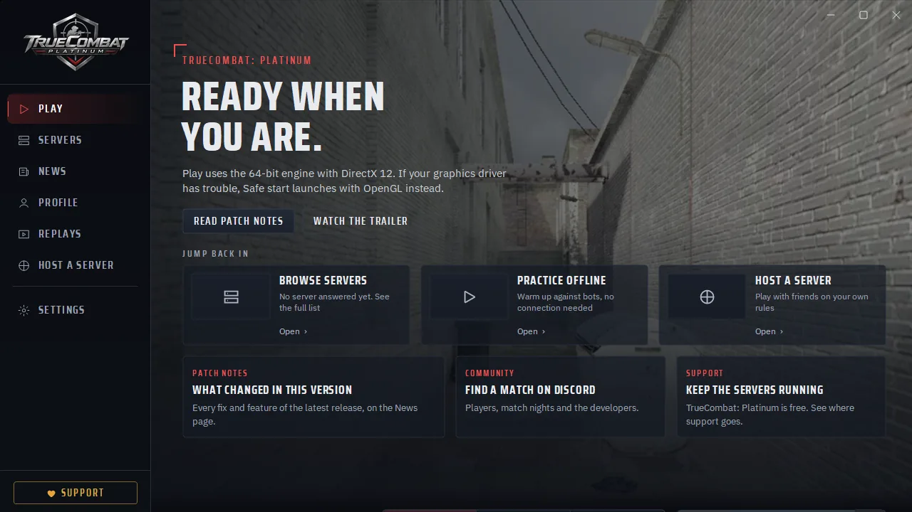

Achter de schermen van 0.35.0, onze grootste update tot nu toe
Easy Anti-Cheat zonder account, een launcher die van nul af is herbouwd, spelersstatistieken uit elk geverifieerd potje en het grootste deel van de playtestfixes. Dit is de lange versie: wat er veranderde, waarom we het zo bouwden, hoe we het testten en wat de update niet haalde.
Versie 0.35.0 ging live op de ochtend van 12 november, om 07:39 Belgische tijd. Het is de grootste update die TrueCombat: Platinum tot nu toe kreeg, en meer dan ooit is ze door jullie gevormd. Het meeste wat erin zit, begon als een regel in Wat de playtests ons leerden, een bericht op Discord of een clip uit een potje.
De patch notes sommen elke wijziging op. Deze post kijkt erachter. Hij legt de vier grote onderdelen van de update uit, de keuzes die we maakten en hoe we ze testten, en hij is eerlijk over wat de update niet haalde. Het is lang leesvoer, dus gebruik de inhoudsopgave om naar wat jou interesseert te springen.
Updaten gaat zoals altijd: de launcher haalt 0.35.0 zelf binnen. De eerste keer dat anti-cheat op je pc wordt ingesteld, vraagt Windows één keer toestemming om de bijbehorende dienst te installeren. Die melding is dus normaal.
Easy Anti-Cheat
Vanaf deze update wordt TrueCombat: Platinum geleverd met Easy Anti-Cheat. Druk je op PLAY, dan start de launcher het spel via de anti-cheat-bootstrapper en controleert de anti-cheatdienst het spel zolang het draait. Die dienst wordt één keer geïnstalleerd, door de installer of bij de eerste start, en dat is de enige beheerdersmelding die je te zien krijgt.
Alle vier de officiële servers, Ranked, Unranked en beide pickupservers, vereisen het nu. Ze werden in de uren na de release omgezet, en we bevestigden dat een schone kopie van het gepubliceerde spel er beveiligd mee verbindt.
Nog steeds geen account
Anti-cheat voor een onlinespel moet weten wie er speelt, zodat een ban aan een speler blijft hangen en niet aan één sessie. Meestal betekent dat: iedereen moet inloggen met een account van de anti-cheatleverancier. Dat wilden we niet. Platinum heeft je nooit gevraagd een account aan te maken, en een anti-cheatsysteem zou daar geen reden voor worden.
Ons eerste plan was een identiteit die aan je pc gekoppeld is. Dat werkte in de tests tot aan de laatste stap, waar de dienst van Epic het weigerde: anti-cheat vereist een echte aanmelding, en een identiteit die alleen zegt op welke machine je zit, wordt niet aanvaard. Dus bouwden we onze eigen aanmelding.
Dat werkt zo. De eerste keer dat je speelt, maakt het spel een privésleutel als identiteit aan op je pc. Start je een beveiligde sessie, dan bewijst het spel aan onze aanmelddienst dat het die sleutel heeft, zonder de sleutel zelf ooit te versturen. Onze dienst geeft Epic dan een kortlevend token dat zegt: "dit is dezelfde speler als de vorige keer". Epic aanvaardt dat, en de anti-cheatsessie start. Jij merkt daar niets van. Geen formulier, geen wachtwoord, geen e-mailadres. Het enige dat ooit je pc verlaat, is een versleutelde ID die niet naar jou te herleiden is.
Op de nieuwe Profielpagina van de launcher kun je die identiteit back-uppen en terugzetten. Doe dat voor je Windows opnieuw installeert of naar een nieuwe pc verhuist, en hou het back-upbestand privé: het draagt je naam op de ranglijsten en je wedstrijdgeschiedenis.
Wat het controleert
De anti-cheatdienst draait alleen zolang het beveiligde spel draait. Hij controleert of de bestanden van het spel de bestanden zijn die wij leverden, en let op knoeien met het spelproces. In onze laatste tests verbond een beveiligde kopie van de gepubliceerde build gewoon, werd een kopie met één aangepast interfacebestand geweigerd, en werd een onbeveiligde client op een server die anti-cheat vereist binnen veertig seconden verwijderd.
Een detail dat belangrijk is voor updates: de launcher zelf valt bewust buiten de bestandscontrole. De launcher werkt zichzelf bij tussen spelreleases door, en we wilden niet dat een launcherupdate je tot de volgende volledige release van de servers zou buitensluiten.
Waar je het ziet
Servers die anti-cheat vereisen, krijgen een groen schild in de serverlijst in het spel en een EASY ANTI-CHEAT-label in de launcher. Servers die het aan hebben staan maar niet vereisen, tonen ANTI-CHEAT ON. Het verbindingsscherm vertelt je bij welk soort server je aansluit. Communityservers kiezen zelf of ze het gebruiken.
Launcher 2.0
De launcher is het eerste wat je ziet en het laatste waar iemand aan denkt, tot hij in de weg zit. De oude launcher was over veel updates heen pagina per pagina gegroeid. Versie 2.0 is een volledige herbouw van de interface, met alles wat er in de loop der tijd bijkwam op de plek waar het hoort.

- Een nieuwe indeling. Een navigatiebalk links en een Play-pagina over het volledige venster, met het laatste nieuws, je servers en een oefenpotje op één klik.
- Een echte serverbrowser. Elke server in een sorteerbare lijst met live spelersaantallen, ping en anti-cheatstatus. Snelle filters verbergen volle of lege servers, of tonen alleen ranked servers of servers zonder bots. Communityservers die de officiële build draaien, krijgen een Verified-label.
- Profiel, Replays en Hosten. Je rang, je rating en je recente ranked potjes, je opgenomen wedstrijden, en een pagina om zelf een server te hosten.
- Instellingen die echt over de launcher gaan. Minimaliseren naar het systeemvak, terugkomen na een potje, opstarten met Windows, accentkleur, interfacegrootte, een limiet op de downloadsnelheid en meer.
- Vier talen. Engels, Duits, Frans en Pools.
- De kleine dingen. Volledige bediening met het toetsenbord, scherpe tekst op elk scherm en elke schaal, een knop Controleren en herstellen voor je spelbestanden, en een pagina Wat is er nieuw na elke update.
Ook twee oude ergernissen zijn weg. Een naam die je in het spel instelt, kleurcodes inbegrepen, wordt bij de volgende start niet meer door de launcher overschreven. En joinlinks van de website en Discord openen nu altijd je geïnstalleerde spel, niet een tweede kopie die je misschien voor tests hebt staan.
Hoe hij getest werd
Een launcher komt aan je bestanden, je instellingen en je netwerk, dus hij krijgt voor elke release een eigen testronde. Voor 2.0 betekende dat 54 screenshotcontroles over elke pagina en taal om opmaakfouten te vangen, 61 bewust kapotte en kwaadaardige joinlinks om zeker te zijn dat geen enkele iets kan doen wat niet mag, en de volledige zelfupdate vanaf oudere launchers, veertien keer gedraaid. De installer werd apart getest, samen met de installatie van de anti-cheatdienst.
Spelersstatistieken uit elk geverifieerd potje
Spelersprofielen op truecombat.eu houden nu elk geverifieerd potje op de officiële servers bij, ranked en unranked, en ze houden er veel meer van bij: precisie, trefzones, openingskills, clutches, multikills, rivalen en records per map. Elk gevecht in de boeken legt uit wat we bijhouden en welke regels het eerlijk houden, dus dit is de korte versie.
De belangrijke verandering in 0.35.0 is dat die regels nu ook afgedwongen worden. Een potje telt alleen als de server anti-cheat aan had van de eerste tot de laatste seconde. Alleen gevechten tussen echte spelers tellen: niets wat jij een bot aandoet, of een bot jou, komt op je record. Opwarmtijd en stilstaan worden weggelaten. De uitgebreide statistieken gingen op beide officiële servers live zo'n veertig minuten na de release, zodra ze met verplichte anti-cheat draaiden.
Je skillrating beweegt nog steeds alleen op de Ranked-server. Potjes van voor deze update blijven op je profiel staan, met de totalen die we toen bijhielden.
De playtestfixes
Wat de playtests ons leerden somde elk probleem uit onze communityplaytests op. Het grootste deel van die lijst is opgelost in 0.35.0. We hebben die post punt per punt bijgewerkt, dus hier willen we uitleggen hoe het werk gebeurde. Het nuttigste wat we leerden, was niet wat er kapot was, maar hoe je dat vaststelt.
Eerst meten, dan fixen
De spelcode van Platinum is een native herbouw, niet de originele TC:E-code, en een herbouw kan op manieren van het origineel afwijken die niemand opmerkt tot een volle server veteranen hem speelt. Dus voor elk gemeld probleem was de eerste stap geen fix, maar een meting tegenover het originele TC:E 0.49b.
Dat veranderde meerdere fixes. Neem springen. Spelers vertelden ons dat sprongen niet zo ver droegen als in het origineel. Onze eerste verdachte was een regel die een sprong in beweging inkort. Toen we die tegenover 0.49b maten, bleek die regel exact te kloppen. De echte verschillen zaten elders: het origineel laat je met volle kracht vanuit stilstand op een laag object springen, zoals een afvalcontainer of de container op Delta, en beperkt kort hoe hoog je opnieuw kunt springen na een harde landing. Platinum had geen van beide. Allebei zijn ze terug, en de sprong op een lage rand ging van net te kort naar er vlot op.
Gehurkt lopen was hetzelfde verhaal. Het voelde te snel, te luid en te wiebelig aan, omdat voetstappen en hoofdbeweging gehurkt twee en een half keer zo snel liepen als in het origineel. Door de timing voor elke houding opnieuw op te bouwen vanuit het origineel, verdwenen alle drie de klachten tegelijk. Wandelen, richten en leunen zijn nu stil, zoals in TC:E.
Gunplay
- Spreiding en schade. We controleerden de spreiding en schade van elk wapen tegenover de originele tabellen. Die klopten al. Dat vertelde ons dat we de treffers die niet landden ergens anders moesten zoeken, en de volgende twee fixes zijn wat we vonden.
- Treffers op leunende spelers. Het spel op je scherm en de server waren het een beetje oneens over waar het lichaam van een leunende speler zat. Schoten op een leunend doelwit landen nu waar je ze ziet.
- Je eerste schoten na het respawnen. Online konden je eerste bewegingen en schoten na een respawn verloren gaan. In een gesimuleerd potje op een slechte verbinding daalde het aantal verloren invoer na een respawn van tot veertien naar hooguit vijf, en telden negentien van de eenentwintig testschoten, met de missers op de uiterste rand van hoofd en benen.
- Grendelgeweren. De R93 en SR-8 halen de grendel nu over nadat je de trekker loslaat, met een eigen geluid, voor het volgende schot. Het geweer heeft zijn bedachtzame ritme terug.
- Granaten. Je kunt een granaat weer koken: hou vuur ingedrukt om hem op scherp te zetten en laat los om te gooien met de resterende ontsteking. Je laatste granaat gooien vuurt je wapen niet meer af. Explosies controleren de zichtlijn naar meerdere punten van je lichaam, zodat dekking werkt, en ze klinken niet meer gedempt door muren in de buurt.
- Niet vuren tijdens het sprinten. Zoals in het origineel is je wapen een kwart seconde nadat je stopt met sprinten weer klaar.
- Richten via het vizier vertraagt je nu zoals het hoort, en spelers en bots brengen hun wapen zichtbaar naar de schouder als ze richten.
Maps
De onzichtbare muur bij het kleine huis op de bomsite van Delta bleek een paal van een veroveringspunt uit de modus Flag Capture, die in elke andere modus solide bleef. Elke map heeft zulke palen, dus we haalden ze weg in alle modi buiten Flag Capture, in plaats van alleen Delta te verbeteren. We liepen ook elke map oppervlak per oppervlak door op ontbrekende textures, en vonden er geen. Los daarvan toonden sommige wapenonderdelen een plaatsvervangende texture, waaronder de spanhendel van de AKS-74U, en die zijn opgelost. Zie je nog een oppervlak dat er verkeerd uitziet, druk dan op F12 terwijl je ernaar kijkt.
Deuren gedragen zich nu zoals in het origineel: een gebruiksicoon als je er een kunt openen, de originele geluiden, en een trage, stille opening als je wandelt of gehurkt zit.
Menu's, chat en wedstrijdverloop
- Opties in het pauzemenu. Een nieuwe pagina MOUSE & VIEW: gevoeligheid met exacte getypte waarden voor muizen met hoge en lage DPI, aparte gevoeligheid voor richten en scopes, een gezichtsveld van 80 tot 110, smoothing en acceleratie.
- Een bug melden vanuit het spel. Druk op F12, of op REPORT A BUG in het pauzemenu, en beschrijf wat er gebeurde. De melding wordt bewaard met een screenshot en je recente consolelog. Onze volgende playtests lopen hierlangs.
- Chat en spraakcommando's. T en Y openen weer het chatvenster, en V opent het menu met spraakcommando's.
- Teamkeuze. Bots tellen niet meer mee voor teamlimieten, elke wissel wordt bevestigd, en een team dat je kiest terwijl de map laadt, blijft behouden, ook voor de volgende map. De automatische balans grijpt alleen in als de teams echt ongelijk zijn, en verplaatst bots voor mensen.
- Opwarmen. De opwarmfase is nu een oefenronde. Je spawnt meteen, respawnt een seconde na je dood, kunt elk wapen proberen en je uitrusting wisselen, en het potje start na een aftelling van 30 seconden zodra er twee spelers zijn. Niets uit de opwarmfase telt mee.
- Servers zoeken. De serverbrowser in het spel zit nu in het hoofdmenu en het pauzemenu, zodat je van server wisselt zonder terug te gaan naar de launcher.
Online spelen
Ook de derde ronde werk aan online spelen zit in deze update. Joinknoppen op de website en in Discord openen het spel meteen op de server. Is die vol, dan wacht de launcher op een vrije plek en sluit hij vanzelf aan. Een korte verbindingstest voor het aansluiten zet extra pakketbescherming aan als je verbinding pakketten verliest. Het scorebord toont verbindingsbalkjes naast elke ping, en cg_netGraph 1 of 2 toont ping, pakketverlies en jitter terwijl je speelt.
Val je uit een potje, dan kun je binnen vijf minuten terugkeren en behoud je je team en score. Op Ranked kost een potje verlaten dat je aan het verliezen bent nu de volledige ratingwijziging, en de server beperkt hoe ver hij de wereld terugspoelt om een treffer te controleren: hooguit 200 milliseconden. Zonder die grens kon een speler op een heel trage verbinding je nog raken lang nadat je op je eigen scherm al achter dekking zat.
Serverhosts krijgen een joinwachtwoord dat echt wordt afgedwongen, tijdelijke bans waarbij de speler de reden te zien krijgt, en een pinglimiet. Onder de motorkap kunnen het spel, de server en de serverlijst nu met IPv6 overweg, en onze serverlijst is bereikbaar via IPv6. Dat wordt elk jaar belangrijker, nu providers door de oudere adressen heen raken.
Hoe het getest werd
Elke release gaat door dezelfde poort: een volledige regressietest van het spel en de dedicated server op zowel DirectX 12 als OpenGL, de launcher en de installer. 0.35.0 slaagde voor alle zeventien spel- en servercontroles op de definitieve build, plus de launcher-, installer- en anti-cheatcontroles hierboven. Elke fix aan beweging en gunplay kreeg daarnaast zijn eigen meting tegenover het origineel, zoals hierboven beschreven, zodat een fix voor het ene niet ongemerkt het andere ongedaan maakt. De build werd in de vroege uren van 12 november bevroren, verpakt, voor de anti-cheat ondertekend en enkele uren later gepubliceerd.
Wat de update niet haalde
Niet alles van de playtestlijst zit in deze update, en dat zeggen we liever dan het stil te laten.
- Treffers op liggende spelers. Onze controle van het richten, wapen per wapen, liep na de release verder en vond nog één geval: schoten op spelers die plat liggen, registreren niet altijd. De oorzaak is bekend en de fix wordt getest.
- Red-dotvizier. De stip in het red-dotvizier is te klein en te zwak. Dat vraagt een aanpassing aan hoe het vizier getekend wordt, niet alleen een nieuwe texture.
- Instant replay. De twee kleine replayfixes uit de vorige update, de korte clip tijdens het opwarmen en de verkeerde lengte in de bevestiging, zitten niet in 0.35.0.
- Bots. Bots brengen hun wapen nu zichtbaar naar de schouder als ze richten, maar hen leren wanneer ze moeten richten, wanneer ze moeten leunen en hoe ze hun routes afwisselen, is een groter werk. Dat staat beschreven in De weg vooruit, voluit.
- De vernieuwde staffbadge zit ook niet in deze update.
Aan al deze punten wordt gewerkt. Zoals altijd komen ze uit wanneer ze door dezelfde poort raken als alles hierboven, en niet eerder.
Bedankt
Deze update bestaat omdat mensen speelden, dingen opmerkten en het ons vertelden. Sommige van de nuttigste meldingen waren één zin: "de sprong op de container op Delta lukt niet". Die ene zin leidde tot een meting, de meting tot de echte oorzaak, en de oorzaak tot een fix die veranderde hoe het hele spel beweegt.
Voelt iets in 0.35.0 niet juist, druk dan op F12 in het spel, of laat het ons weten op Discord. De roadmap toont wat er nog komt.
Was dit artikel de moeite waard?
Anoniem. Geen account, geen cookies.
Vragen over dit artikel? Stel ze aan het team op Discord.